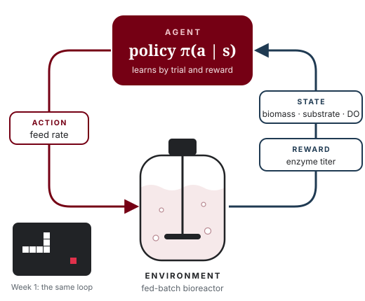
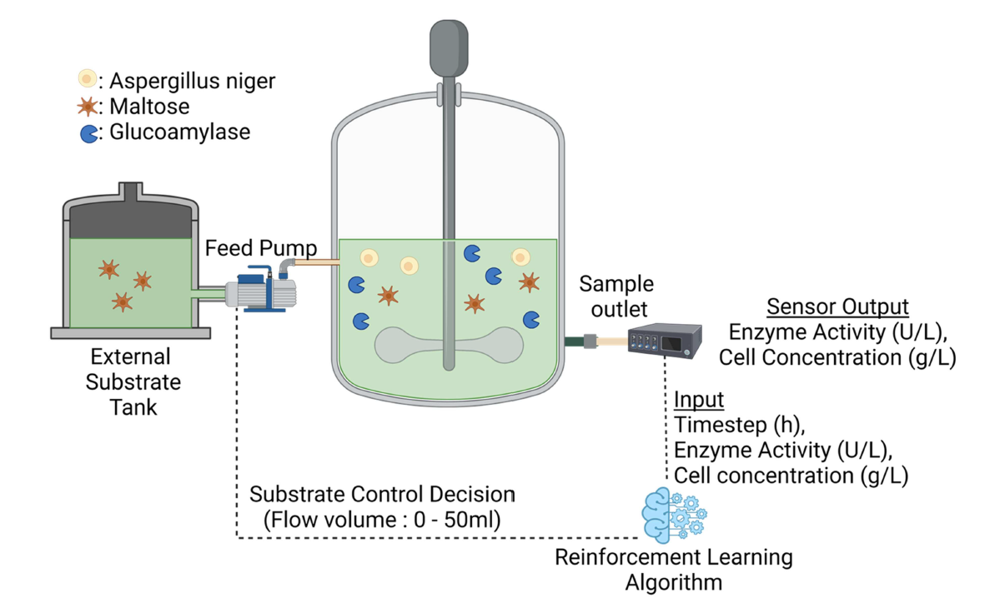

Course series / Course 1
Course 01 Built
Reinforcement Learning for Chemical Engineers
Vignettes & Vibe Coding
From a no-code game to a tested fed-batch controller in seven weeks, with an AI pair-programmer at your side.

Why this course
Reinforcement learning fits chemical engineering. Fed-batch feeding, process control and scheduling are all sequential decisions with delayed rewards and dynamic states. Yet RL rarely appears in ChemE curricula. The barrier was never the idea. It was the software: Python, Gymnasium, Stable-Baselines3, and the weeks it took to wire them together.
That wall is gone. With an AI coding assistant, an engineer can describe a process in plain English and co-write a working simulator and environment. The instructor lived the old barrier in 2019, building the Game of Cells cell-culture twin by hand, and later published RL control for CAR T-cell expansion and fed-batch enzyme production. This course compresses that path into seven weeks.
If AI is replacing software engineers, who designs and deploys the systems? Process engineers do.
Who it is for
Undergraduates
Juniors and seniors who know material balances and want a modern tool for control and optimization, with no coding background required.
Graduate students
Researchers who want to prototype RL for their own unit operation and read process-control RL papers with a critical eye.
Practicing engineers
Process, automation and bioprocess engineers who want a working, tested controller prototype without a software team.
Leaders and managers
Technical leaders who need to judge what AI can and cannot do on a plant, and ask the right verification questions.
What you will be able to do
- Explain RL in ChemE terms. State, action, reward and policy, mapped onto a reactor.
- Decide if a problem is an RL problem. Apply a process engineer’s checklist before writing a line of code.
- Write a spec sheet an AI can build from. Define state, action and reward precisely enough to test.
- Co-author and test a simulator and environment. Mass balances and Monod kinetics become a Gymnasium environment.
- Train, benchmark and diagnose an agent. Compare against an operator’s recipe and catch reward hacking.
- Ship a documented app. Hand off a controller dashboard that others can open and use.
From a snake to a bioreactor
The course starts with a game everyone knows, then swaps the board for a reactor.
| Snake game | Fed-batch bioreactor | RL term |
|---|---|---|
| Board | Reactor | Environment |
| Snake position, food location | Biomass, substrate, product, volume, DO | State |
| Up, down, left, right | Feed pump rate (0 to 50 mL) | Action |
| Eat food, +1 | Enzyme titer | Reward |
| Hit the wall | Overflow, substrate inhibition, oxygen limit | Constraint violation |
| Game over | Batch end | Episode end |

A fed-batch RL setup: external substrate tank, feed pump, sample outlet, sensor readings of enzyme activity and cell concentration, and the RL algorithm closing the loop.
Seven weeks, four moves
Every week belongs to one of four moves: Play with the idea, Build the pieces, Verify before you trust, and Deploy what you made.

The vibe-coding method
One lesson, repeated until it is a habit. Never ask the AI for the whole system. Ask for one piece, test that piece, then stack it.
flowchart LR
A["Break the problem down"] --> B["One piece, one prompt"]
B --> C["One test"]
C -->|"Pass"| D["Stack the piece"]
C -->|"Fail"| B
D --> E["Test every layer"]
E -->|"Fail"| B
A failed test is not a setback. It is the loop working: you refine the prompt, not the code. The tests are mass balances, sanity bounds and benchmarks that any process engineer already trusts.
The capstone
An RL feeding controller for a fed-batch bioreactor twin, benchmarked against an operator’s recipe, stress-tested with a faulty pump, and shipped as a shareable web app.
- A tested twin and environment. A fed-batch simulator wrapped as a Gymnasium environment, with its test suite.
- A trained and benchmarked controller. Titer compared against the recipe, plus a faulty-pump stress test.
- A shareable app and build journal. A controller dashboard and a prompt log that documents how it was built.
How every week runs
Concept
One hour. The idea in plain words, with ChemE analogies and live demonstrations.
Studio
One hour. Work through a design problem together: specs, prompts and reward choices with an AI assistant.
Lab
One hour. Hands-on build in the browser, with a test for every piece you make.
What you need, and what you don’t
You need
A laptop, a web browser, a free AI assistant account, and a process you care about.
You don’t need
Prior coding, a command line, Git, or any software installation. Code runs in the browser.
Tools you will meet
Claude ChatGPT Gemini Copilot Google Colab Python Gymnasium Stable-Baselines3 Streamlit GitHub
After this course
- Read and question RL papers in process control.
- Prototype RL for your own unit operation.
- Work fluently with any AI coding assistant.
- Judge AI-built tools by the tests they pass, not the confidence they project.
Next: Course 2: Digital Twins for Process Engineering builds a better world to train in.
Course designer and instructor
Co-developed with Dr. Nigel F. Reuel, Iowa State University
Your instructor
Sakib Ferdous, Ph.D.
Sakib is a chemical engineer and AI researcher who builds digital twins and learning controllers for bioprocesses, and carries them from equations to deployed tools. He holds a Ph.D. in Chemical Engineering from Iowa State University and is the first graduate of Iowa State’s M.Sc. in Artificial Intelligence. His doctoral work built Game of Cells, a cell-culture digital twin for training control policies, and reinforcement-learning strategies for CAR T-cell expansion and fed-batch enzyme production, published in Biotechnology and Bioengineering and the AIChE Journal.
He then took the same ideas into production. At Corteva Agriscience he deployed a company-wide decision pipeline on Docker and Kubernetes. At Craft BioSolutions, a startup founded on this research, he co-owns the physics-based bioreactor twin and its device-to-cloud stack. He learned AI for chemical engineering the hard way, back when the code was the wall. These courses are built so the next engineer does not have to.
- EducationPh.D. Chemical Engineering and M.Sc. Artificial Intelligence, Iowa State · B.Sc. Chemical Engineering, BUET
- IndustryPostdoctoral Research Associate, AI in Plant Breeding, Corteva Agriscience (2025–)
- StartupHead of Bioprocess Automation, Craft BioSolutions (2025–)
- NextMIT Initiative for New Manufacturing, AI agents that learn bioprocesses (from January 2027, planned)
- TeachingAIChE 2026 Education Division talk 217c · APEX and WiSE AI-in-ChemE workshops · mentee to first-author paper (2026)
- LeadershipNSF I-Corps Entrepreneurial Lead · CEGSO President · GPSS Senator, Iowa State
Full materials on request
The complete course package is ready to share
Session slide decks, browser notebooks, the instructor guide and the capstone briefs are shared with collaborating faculty, departments and industry partners. Write to ask for a walkthrough, a pilot offering, or the materials for one course.
Sakib Ferdous · ferdous1418@gmail.com · +1 515 686 7280
- Slide decks for all 21 sessions
- Browser notebooks (Google Colab)
- Instructor guide and timing notes
- Prompt libraries for each lab
- Rubrics and capstone briefs
- Simulators and datasets